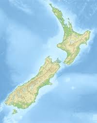

Father Antoine Garin left France in 1841 as a Marist missionary bound for New Zealand.
The journey took several tough months by ship.
When he arrived in the Bay of Islands, he had to adapt quickly, learning the Māori language and culture.
Later, he moved to Nelson, where he built churches, schools, and communities.
Despite the challenges of travel, isolation, and a new environment,
Garin stayed committed, helping to grow the Catholic Church in New Zealand.
